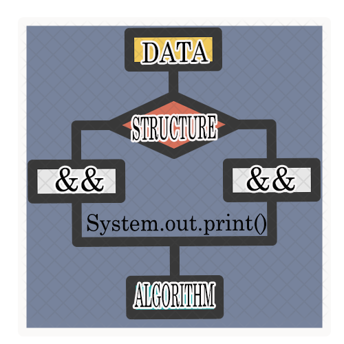

Human to Computer Interaction
For me learning HCI put some interest, this the course where I can understand how important the interaction between the computer and a person itself, Discussing the aspects and how should a systems/project works. learning c# is so complicated but due to my knowledge in java programming, I can briefly understand.
Web Technologies & Development
At first, I little bit confuse about my activities really because I am that good on designing but when I have done something beautiful or great for me, I so relieved, I said to my self oh "kaya ko pala". so I start to impress my self in doing such. Promising to my self I can use this as my stepping stone to curve my future Because we know IT people Web development Is a big factor to have a good career in life as being an IT professional.
Data Structure & Algorithm
In this course, It improves my skills in Programming, Even it so hard, I'm trying all my best.